Visual Studio Code¶
Es un editor de texto, con innumerables extensiones, especialmente diseñado para la escritura de código, y con versiones para los principales sistemas operativos. Esta disponible para su descarga gratuita en su página web y su código fuente en su página de github.
Generalidades¶
- Idioma
Si la instalación trae el programa en inglés, puede instalarse el paquete de nuestra lengua pulsando Ctrl+Shift+P (o seleccionando
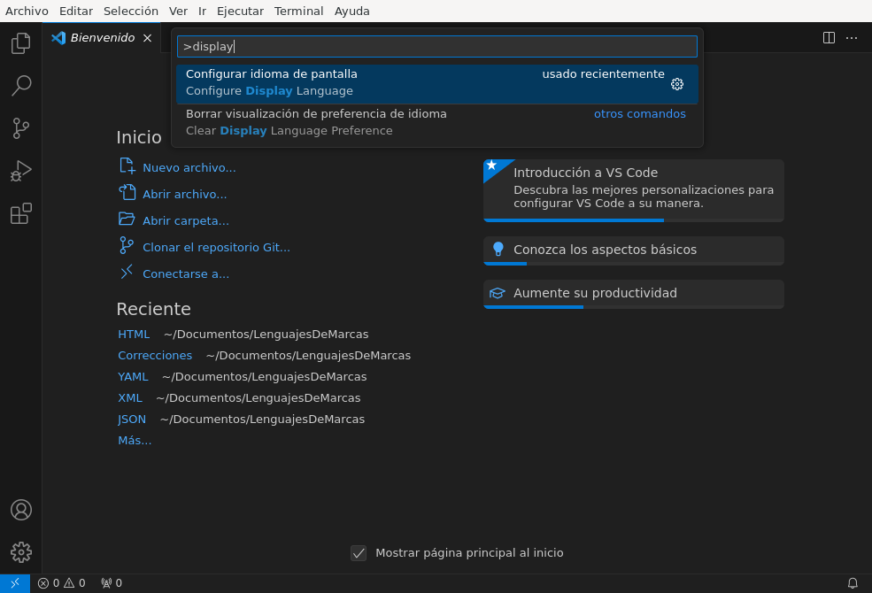File>Preferences>Settings) y escribiendo la palabra display para reducir los términos de búsqueda:Nota
El idioma es, en realidad, una extensión que se habilita al realizar esta operación.
- Áreas especiales
Podemos abrir algunas áreas especiales que nos permiten consultar o realizar ciertas actividades interesantes:
Ctrl+Shift+P, abre un pequeño cuadro que nos permite introducir instrucciones[1].
Ctrl+Shift+M, abre en la parte inferior una consola que muestra los errores derivados de una determinada acción. Por ejemplo, los errores de validación.
Personalización¶
El entorno es muy, muy configurable y permite alterar su comportamiento mediante la manipulación de varios aspectos cuya descripción se almacena en archivos de configuración JSON:
Los parámetros de configuración propiamente dichos (
settings.json).Las extensiones (
extensions.json).Las tareas (
tasks.json).La depuración (
launch.json).Las asociaciones a teclas o atajos de teclado (
keybindings.json).
- Niveles de personalización
Además, estas personalizaciones podemos hacerlas a dos niveles:
- Perfiles
El nivel superior de configuración es el «perfil», cada uno de los cuales se corresponde con un distinto perfil de desarrollador. Esto es debido a que, cuando programamos por ejemplo en Python, no necesitamos exactamente el mismo entorno de desarrollo que cuando programamos en Javascript. En consecuencia necesitaremos unas extensiones distintas, unas preferencias distintas, etc. Visual Studio Code nos permite lidiar con estas diferencias, permitiendo crear distintos perfiles, que escogeremos a voluntad dependiendo qué pretendamos desarrollar.
En principio, existe unicamente un perfil «Predeterminado» («Default», si usamos el original inglés), que se identifica porque aparece en la esquina inferior izquierda una ruedecita dentada como icono asociado a este perfil:
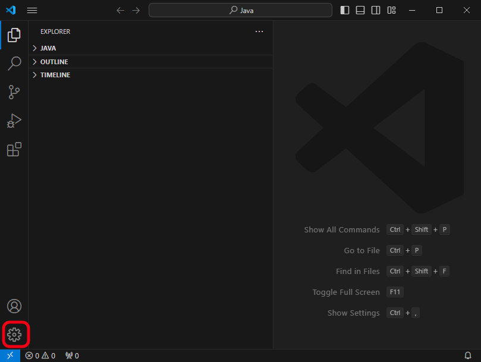Pulsando sobre el icono podemos cambiar de perfil o crear uno nuevo:
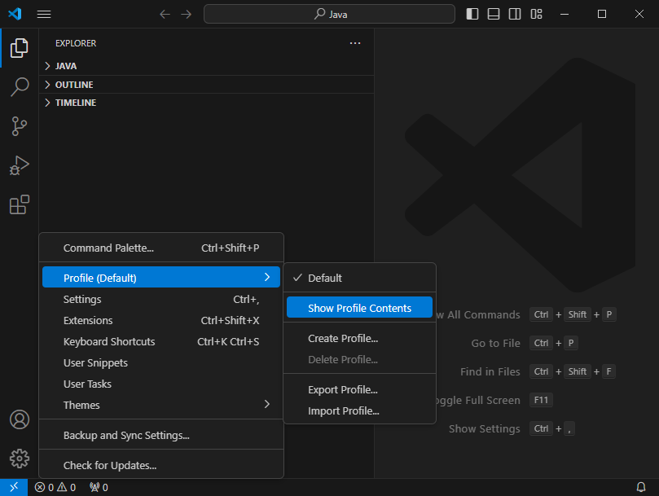Para crear tenemos dos estrategias:
Crear uno o bien de cero o bien copiando otro ya existente. En este segundo caso, se nos permitirá elegir de forma grosera qué aspectos queremos excluir de la copia.
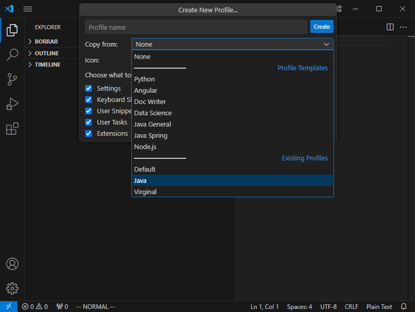En caso de que queramos ser más específicos al escoger los aspectos que queremos transladar de un perfil ya existente, podemos escoger «Mostrar los contenidos del perfil» y señalar aquello que queremos transferir al nuevo perfil. El resultado será un archivo
.profile, que puede importarse luego a fin de crear el nuevo perfil.
Al crear un nuevo perfil puede asociarse un icono identificativo, lo que nos ayuda a saber siempre de un vistazo qué perfil estamos utilizando.
Los archivos JSON que caracterizan el perfil se almacenan bajo la ruta
$CONFIG/Code/User/profiles, donde$CONFIGes la localización donde el sistema operativo almacena las configuraciones de programas:En Linux,
$XDG_CONFIG(habitualmente,~/.config).En Windows,
%APPDATA%.
- Áreas de trabajo
El segundo nivel de personalización son las áreas de trabajo que podemos asimilarlas a los proyectos: para desarrollar un proyecto de Python crearé un área de trabajo sobre un directorio.
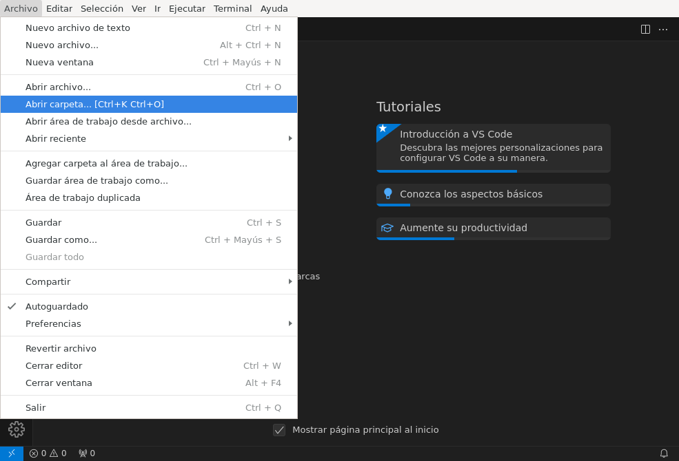Las áreas de trabajo también se pueden personalizar, de modo que la personalización que disfrutemos al trabajar será la suma de la que hayamos hecho para el perfil que estamos usando más la que apliquemos al área de trabajo. De hecho, Visual Studio Code recuerda el perfil que se usó la última vez que se estuvo trabajando sobre un área de trabajo a fin de que cuando abramos un área, se cambie automáticamente de perfil. Por ejemplo, si trabajando sobre un proyecto de Java (área de trabajo), para el que lógicamente tendremos activo el perfil de Java, decidimos cambiar de proyecto y acceder
Los archivos JSON de personalización del área de trabajo se almacenan dentro del subdirectorio
.vscode/incluido en la carpeta raíz del área de trabajo.Por hacer
Tratar las área de trabajo de múltiples directorios.
La estrategia, pues, para la personalización es tener distintos perfiles, uno para cada uno de los distintos tipos de desarrollo que pretendamos hacer. Para cada proyecto concreto, definiremos un área de trabajo distinta la cual podremos o no personalizar en un segundo nivel de concreción:

Ver también
Véanse más adelante los Preliminares.
- Configuración
Para modificar parámetros de configuración podemos pulsar Ctrl+,:
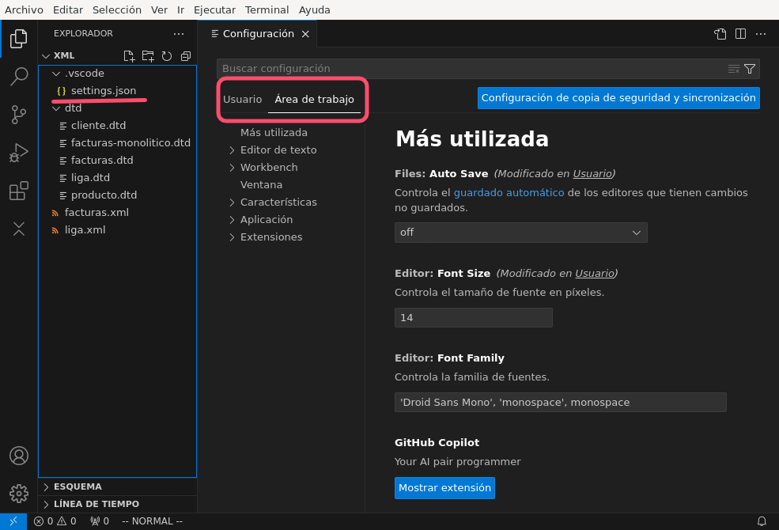Este tipo de personalización puede hacerse tanto a nivel de perfil como de área de trabajo. Como alternativa, podemos directamente editar los
settings.jsoncorrespondientes.
- Extensiones
Las extensiones permiten aumentar las funcionalidades del programa y se instalan sólo a nivel de perfil. Ahora bien, su activación (o desactivación) sí puede hacerse a nivel de área de trabajo.
Una indispensable para quien se haya criado editando archivos en vim es VSCodeVim, que permite editar archivos como se hace en el veterano editor.
Para gestionar las extensiones, basta con pinchar sobre el icono lateral izquierdo señalado:

Dentro de las extensiones existe un tipo especial de ellas denominado paquete de extensiones (Extension Pack), que no es más que una extensión cuya instalación (o desinstalación) supone la instalación de varias extensiones conjuntas. Por ejemplo, Extension Pack for Java instala hasta seis extensiones que facilitan el trabajo con Java[2].
- Atajos de teclado
A nivel de perfil (y no de área de trabajo), el programa ofrece la posibilidad de asociar combinaciones de teclas a las distintas tareas definidas. Las asociaciones se puede hacer de distintos modos:
Pulsando Ctrl+Shift+P para abrir el diálogo que permite ejecutar tareas y, en vez de ejecutarla, pulsar sobre la ruedecilla dentada asociada:
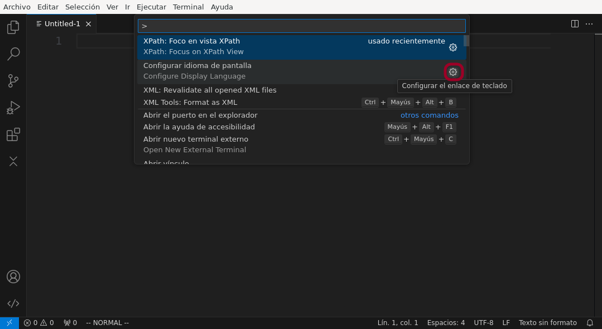Pulsando Ctrl+k-Ctrl+s para ver la lista de asociaciones a tareas y buscar en ella la tarea que nos interese.
Editar directamente el archivo
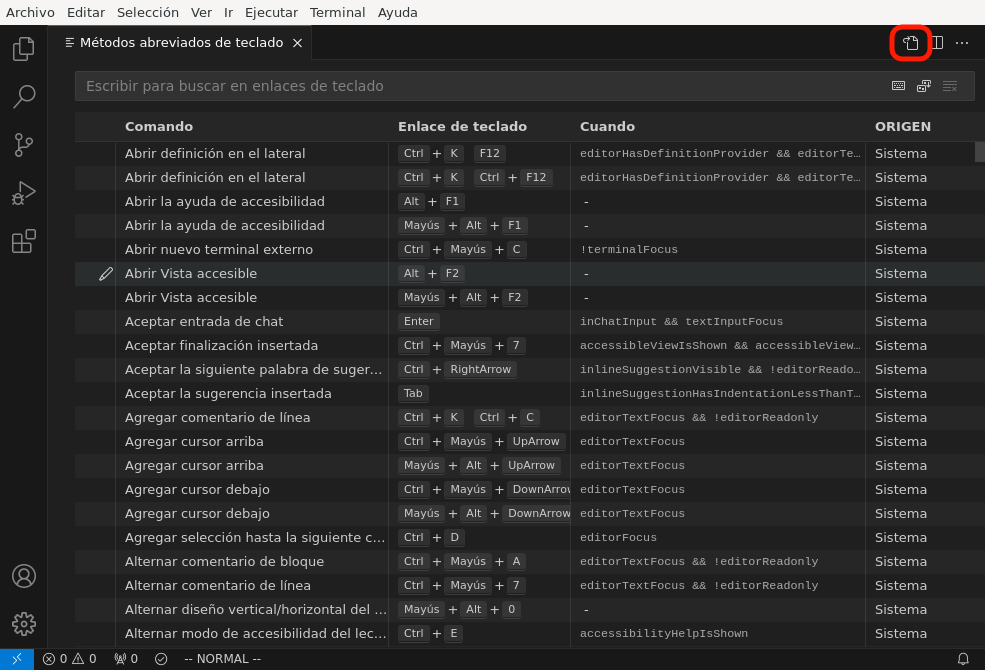keybindings.jsondel perfil. Lo más cómodo, en vez de buscarlo en el sistema de archivos, es acceder a la lista de asociaciones que se acaba de citar, y pulsar aquí:El archivo contiene un array en que cada ítem es una de esas asociaciones. Más adelante se sugerirán algunos.
Ver también
La ayuda oficial del programa tiene una buena explicación sobre estos atajos.
- Tareas
El programa permite definir tareas de usuario tanto a nivel de perfil como a nivel de área de trabajo editando los respectivos
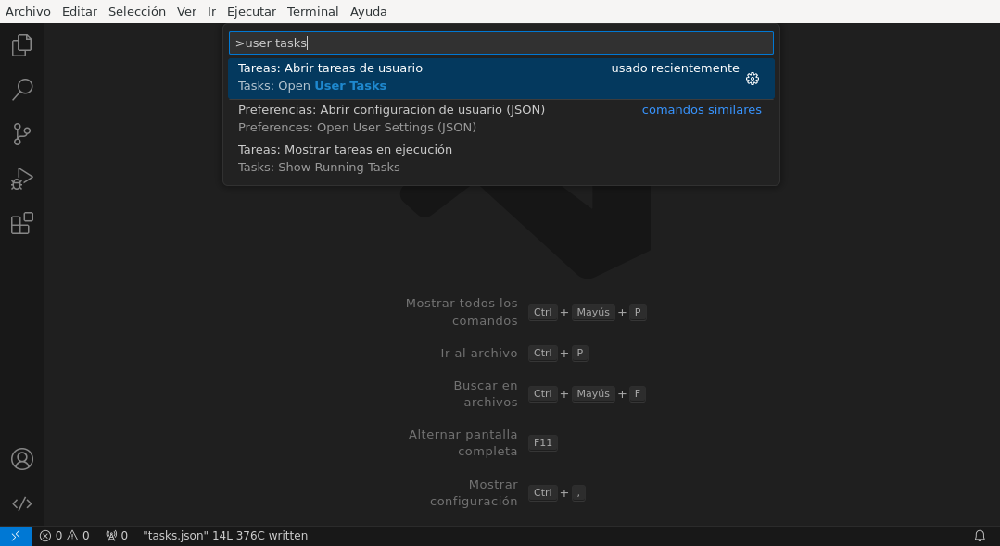tasks.json. El segundo es fácil de editar (se debe crear bajo el subdirectorio.vscode), mientras que para lo primero lo más conveniente es pulsar Ctrl+Shift+P y buscar la orden Abrir tareas de usuario:Una vez abierto el archivo, deben definirse la tareas en formato JSON. Por ejemplo, para abrir el archivo activo en el navegador Brave deberíamos definir una tarea así:
{ "version":"2.0.0", "tasks": [ { "label": "Abrir en Brave", "type": "shell", "command": "brave-browser", "windows": { "command": "C:\\Program Files\\Brave Software\\etc..." }, "args": [ "${file}" ], "presentation": {"reveal": "never"}, "problemMatcher": [] } ] }
La etiqueta (
label) nos sirve para identificar la tarea ycommandyargspara definir cuál es la aplicación externa que abriremos y con qué parámetros se ejecutará. Pueden también definirse campos específicos para sistemas específicos concretos como en el ejemplo se hace para dar soporte también a Windows.Ver también
Para ver cuáles son las variables que pueden usarse (como
${file}en el ejemplo), consúltese Variables Reference de la documentación oficial.Para ejecutar la tarea habrá que volver a abrir el cajetín para ejecutar ordenes y buscar Ejecutar tarea:
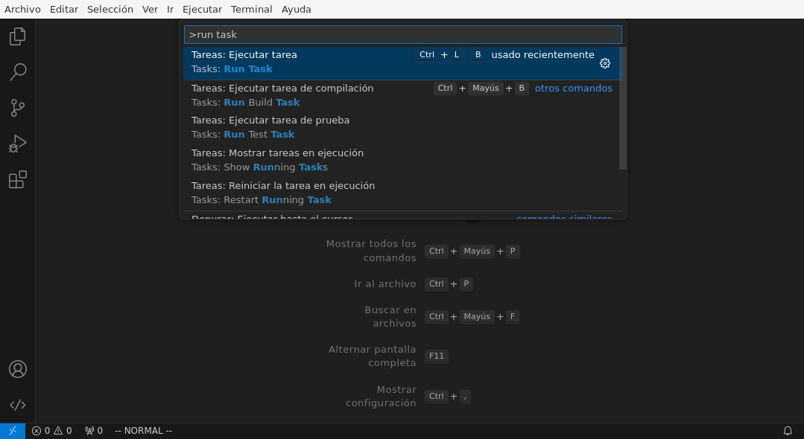Aparecerá a continuación la lista de tareas definidas y podemos ejecutar la que deseemos. Una alternativa más cómoda es asociarle un atajo de teclado:
[ { "key": "ctrl+l b", "command": "workbench.action.tasks.runTask", "args": "Abrir en Brave" } ]
En este caso, se abrirá Brave al pulsar Ctrl+l-b.
Ver también
Para más información, consulte cómo crear tareas.
- Depuración
Visual Studio Code también está preparado para permitir la ejecución y depuración de código con las técnicas habituales de ejecución paso a paso, puntos de ruptura, puntos de ruptura condicionales, etc. Para ello es necesario dotarlo de soporte para la depuración del lenguaje de programación concreto en el que queramos hacer nuestros desarrollos. Esto se logra instalando las extensiones de depuración propias de cada lenguaje (Debugger for Java, Javascript Debugger, Python Debugger, etc).
De inicio, sin configuración adicional, podremos establecer puntos de ruptura, etc. usando el editor y podremos ejecutar sin más pulsando Ctrl+F5 y ejecutar depurando pulsando F5.
También es posible la depuración abriendo la barra lateral para ello:

En esa barra podrá escogerse, en caso de existir varios, el mecanismo de ejecución; y podrán vigilarse y manipularse los valores de las variables durante la depuración.
Ver también
A la configuración básica citada, se le puede añadir otra adicional dentro de
.vscode/launch.json, cuyos principios pueden leerse en el artículo Working with VSCode launch configurations.Ver también
Para aprender a depurar lea el artículo Debugging de la página oficial.
Preliminares¶
Antes de empezar cualquier configuración específica a un lenguaje determinado es conveniente preparar en el perfil Predeterminado todo aquellas configuraciones que deseemos que sean universales independientemente de la herramienta que utilicemos. En particular, nos puede interesar:
Los aspectos relacionados con el editor (tamaño de la fuente, emulación de vim).
Los atajos generales de teclado.
La instalación de extensiones que consideremos útiles para todos o gran parte de los perfiles (p.e. alguna relativa a Github). En caso de que alguna no sea útil para todos, podemos tenerla deshabilitada para perfiles específicos.
Definido a nuestro gusto este perfil, podemos exportarlo a un archivo; e importarlo como base de cada nuevo perfil que creemos para hacer desarrollos con una herramienta determinada. En particular, para este curso nos interesará crear perfiles independientes para:
XML.
JSON.
YAML.
Desarrollo web, que consistirá en añadir al perfil anterior, configuración apropiada para desarrollar en Javascript.
Integración con Git¶
Un aspecto fundamental del desarrollo de aplicaciones es tener un adecuado control de versiones. Si decidimos usar Git, Visual Studio Code nos proporcionará una excelente integración.
Requisitos¶
Previamente, sin embargo, necesitaremos:
Inicialización¶
Cumplido eso podemos partir de dos comienzos distintos para convertir el espacio de trabajo en un repositorio de Git también:
Definir el control de versiones en un espacio de trabajo que antes careciera de él.
Clonar un repositorio ya existente para constituir con su contenido un espacio de trabajo.
Para lo primero basta abrir un área de trabajo y, ya con el área abierta, pinchar sobre el icono de «bifurcación de ruta» que se puede ver a la izquierda:

Hecho esto, si el espacio de trabajo carecía de control de versiones, nos dará la posibilidad de iniciarlo[3] y crear un commit inicial (el campo nos permite indicar con qué mensaje queremos identificarlo):
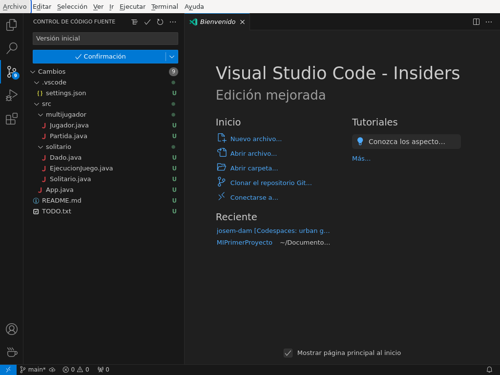Prudencia
El commit necesita realizarse bajo una identidad. Si no hay
definida ninguna en el archivo de configuración de Git
(~/.gitconfig en Linux o %USERPROFILE%\.gitconfig en
Windows) la acción no se llevará a cabo, así que tendremos que realizarla
antes:
[user]
name = "Perico de los Palotes"
email = "perico@example.com"
Si, además, queremos sincronizar con un repositorio de Github, deberemos volver a pinchar sobre el icono de «bifurcación de ruta» y escoger Publicar la rama:

En este caso, deberemos validarnos con nuestra cuenta (en caso de que no lo hubiéramos hecho antes) y escoger el nombre para el nuevo repositorio:

Prudencia
El programa atiende a lo que se haya indicado en la configuración
de git (Linux la almacena en ~/.gitconfig), si es que el usuario ya
ha usado y configurado anteriormente git fuera de Visual
Studio Code. Si este es el caso y, además, queremos utilizar un usuario
distinto podemos hacer lo siguiente:
Llevar a cabo todos los desarrollos con este programa bajo un mismo directorio (pongamos que
~/Programacion/VSCode).Utilizar la configuración condicional para modificar qué usuario realiza cambios y de qué forma se gestionan las credenciales. Así en
~/.gitconfigpodemos escribir:[user] name = Yo cuando uso Git email = cuenta1@example.com [credential] # Supongamos que usamos OAuth helper = "cache --timeout=7200" helper = oauth [includeIf "gitdir:~/Documentos/VSCode/"] path = ~/Documentos/VSCode/.gitconfig
Y en
~/Documentos/VSCode/.gitconfig:[credential] # helper es acomulativo y dejarlo en blanco, # borra las configuraciones anteriores. # Por tanto, Visual Studio Code se encarga de la autenticación. helper = [user] name = Yo cuando uso vscode email = cuenta2@example.com
La otra opción para comenzar es clonar un repositorio para lo cual no tenemos más que declarar nuestro propósito y especificar cuál es la dirección del repositorio:
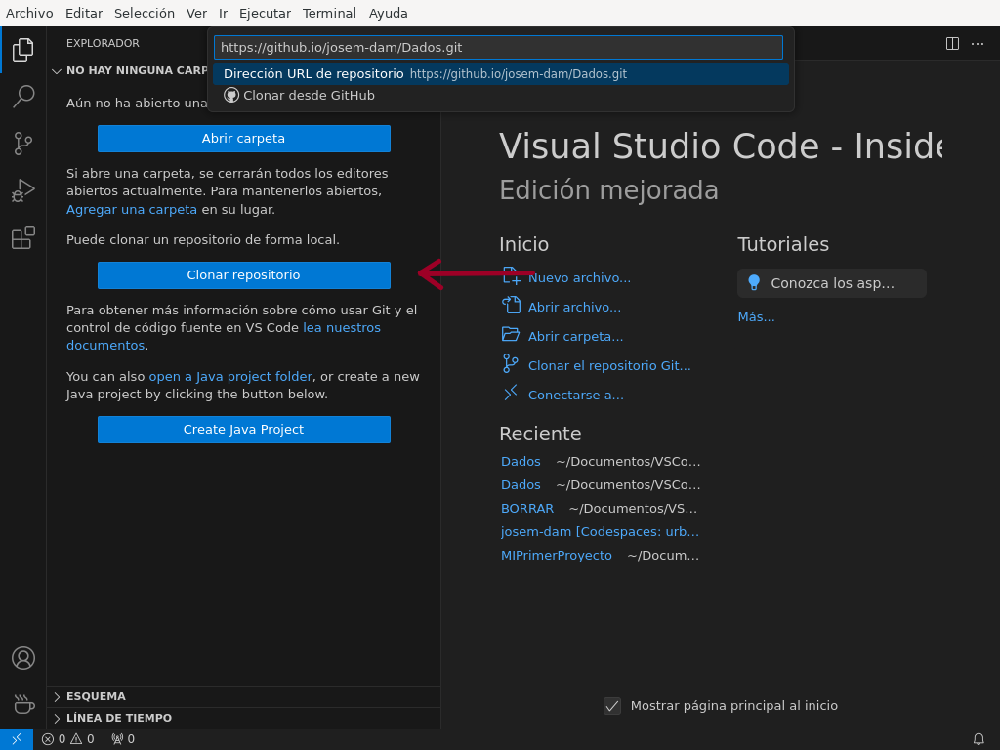En este caso, podemos escribir directamente la dirección del repositorio (como se observa en la captura) o pinchar sobre «Clonar desde GitHub» para identificarnos con un usuario. En este segundo caso (o si ya hubiéramos estado identificados previamente), se sustituirá esa leyenda por la lista de repositorios del usuario y podremos elegirlos directamente.
Sincronización¶
Una vez que tengamos asociado el directorio local con un repositorio remoto, el programa será capaz de marcarnos qué archivos hemos cambiado respecto a la versión del último commit, nos lo mostrará en el propio editor e incluso podremos consultar en qué consiste ese cambio y revocarlo:
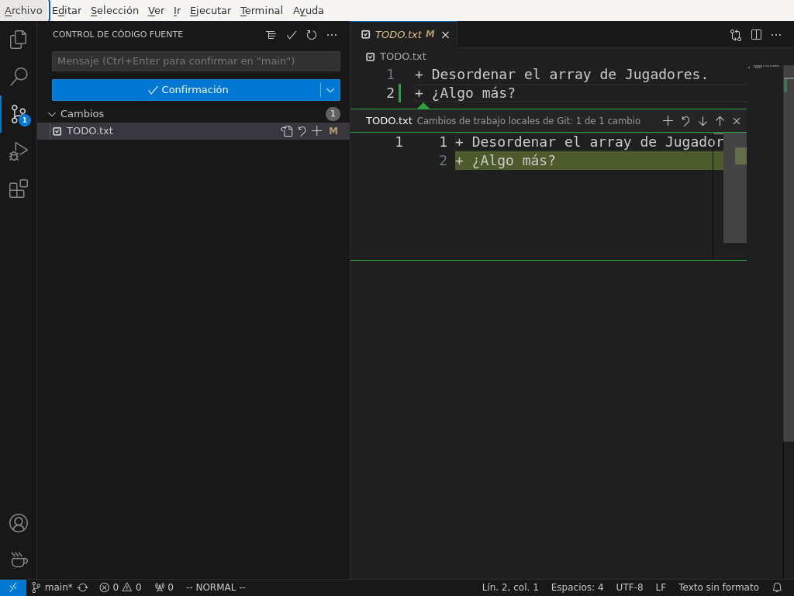Con el soporte nativo para Git de Visual Studio Code sólo podremos hacer comparaciones entre la última versión moficiada y la última confirmada (commit). Sin embargo, si instalamos la extensión Gitlens podremos hacer estas comparaciones con todas las versiones anteriores:

Otra circunstancia con la que nos podemos encontrar es que un área de trabajo que ya tenemos asociada a un repositorio remoto, quede desfasada y queramos, antes de comenzar a programar, sincronizarla para que quede en el estado más avanzado del repositorio. Para ello, simplemente, podemos hacer un «pull» tal como haríamos manualmente con git:

Existe, no obstante, la posibilidad de ejecutar periódicamente un git
fetch si configuramos:
{
"git.autofetch": true,
"git.autofetchPeriod": 1800000
}
en que la segunda opción indica la frecuencia con la que se hace la comprobación (500 horas, o sea, nunca). Esto provoca que al abrir el programa se compruebe si ha habido algún cambio en el respositorio desde la última vez que accedimos al área de trabajo y ya no se vuelva a realizar otra comprobación mientras estamos trabajando[4]:
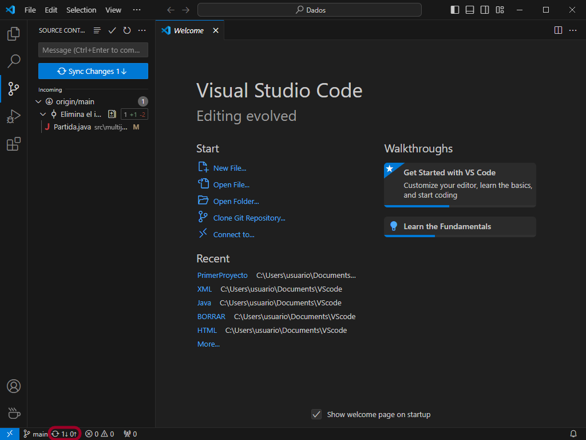Nota
La captura muestra directamente lo que se ve en la barra lateral izquierda cuando pulsamos el icono de Git (bifurcación de ruta). Sin embargo, antes de pulsar, podemos conocer que existen cambios en el repositorio remoto, porque en la barra de estado de la parte inferior se verá que hay cambios pendientes (en este caso, 1 de bajada y ninguno de subida).
Ramas¶
El soporte nativo también nos permite tratar con ramas, cambiar entre ellas y mezclarlas de forma bastante intuitiva. En la parte izquierda de la barra inferior de estado podemos ver en qué rama estamos trabajando y, si pulsamos sobre ella, se nos abrirá un cuadro para escoger otra rama entre las existentes o crear una nueva:
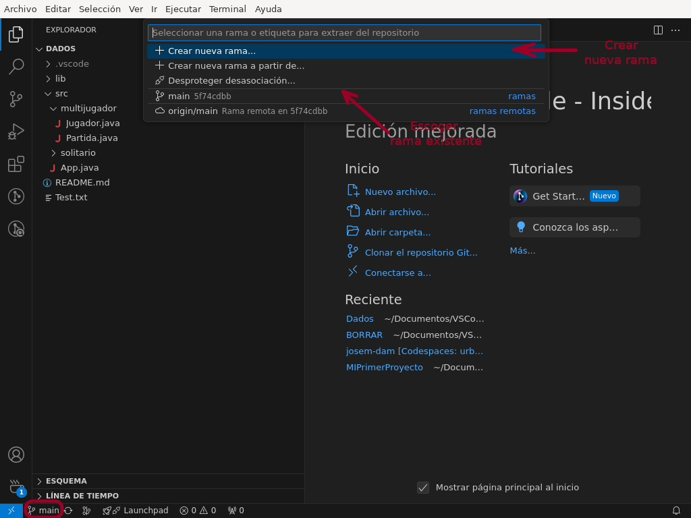Para otras operaciones, como mezclar ramas, habría que acudir al menú de la sección de control de versiones:
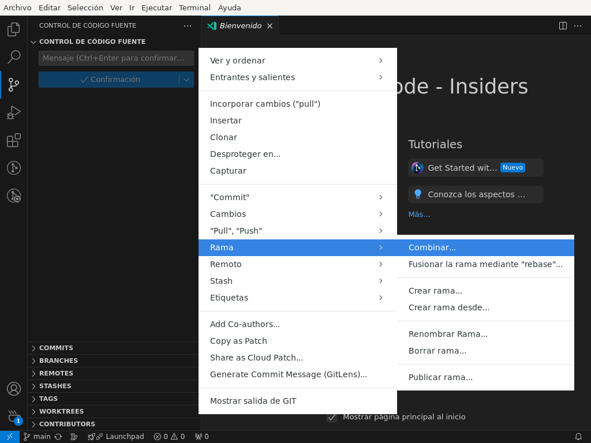Perfiles de desarrollo¶
XML¶
Para manipular documentos XML es recomendable instalar algunas extensiones:
Facilita la edición de documentos XML (cierre de etiquetas, etc.) y la validación con DTD y XSD. |
|
Proporciona soporte para XPath y XQuery. |
La comprobación de que el documento es bien formado, además de otras funcionalidades como cerrar automáticamente la etiqueta que se acaba de abrir, se puede lograr instalando la extensión XML de RedHat.
Esa misma extensión también permite la validación con DTD si se define
correctamente la declaración de tipo de documento. Ahora
bien, por defecto, la extensión no atiende las definiciones hechas en un DTD
referido desde otro DTD mediante una entidad parámetro,
lo que malogra una gramática que queramos hacer modular. Puede corregirse
esto ajustando a verdadera la opción xml.validation.resolveExternalEntities:
{
"xml.validation.resolveExternalEntities": true
}
Para evaluar expresiones XPath o XQuery podemos valernos de la extensión XML Tools que a su vez para lo segundo requiere que se haya instalado BaseX:
Instalar previamente BaseX.
Configurar la extensión XML Tools para que use BaseX como procesador. Para ello, necesitamos editar la configuración y añadir:
{ "xmlTools.xqueryExecutionEngine": "/usr/bin/basex", "xmlTools.xqueryExecutionArguments": [ "-i", "$(input)", "-o", "$(input).output.xml", "$(script)" ] }
Prudencia
En Windows la ruta será algo parecido a
c:\\Program Files (x86)\\BaseX\\bin\\basex.bat. Obsérvese que habrá que escapar las contrabarras.
Una vez bien configurada, el modo de ejecutar consultas es el siguiente:
- XPath
Estando activo el XML para el que queremos hacer consulta o pulsamos Ctrl+Shift+P y ejecutamos XML Tools: Evaluate XPath, o bien, pulsamos directamente Ctrl+Alt+Shift+X (atajo de teclado que predefine la propia extensión).
Escribimos en el cuadro de diálogo la expresión y se verá el resultado de la consulta en el área adicional de salida (output).
Prudencia
El evaluador devuelve siempre cadenas, no nodos; por lo que si la expresión debe devolver nodos, eliminará todas las etiquetas.
- XQuery
Creamos un archivo
.xqcon el código de XQuery.Estando activo este archivo, pulsamos Ctrl+Shift+P y ejecutamos XML Tools: Execute Query.
Si hay varios XML en el directorio se nos preguntará sobre cuál queremos hacer la consulta, y, si hemos incluido, la opción -o en la configuración (tal como se ha sugerido antes), se nos pedirá confirmar el archivo de salida. Si no la incluimos, la salida se volcará directamente en una subventana.
Abrimos el archivo de salida para consultar el resultado.
Para simplificar su ejecución, podemos asignar una atajo de teclado a esta tarea:
[ { "key": "ctrl+shift+alt+z", "command": "xmlTools.executeXQuery" } ]
JSON¶
El editor tiene soporte nativo, por lo que, en principio, no necesita extensiones para que podamos trabajar cómodamente con este formato. De hecho, nos señalará sin configuración adicional si el documento JSON que editamos no es bien formado. También es capaz de validarlo, pero habremos de proporcionarle el esquema mediante configuración. Incluso podemos formatear correctamente el archivo (sangrados, etc.) pulsando Ctrl +Shift+I.
Prudencia
Por la naturaleza de esta configuración, es probable que nos interese hacerla para un área de trabajo, no un perfil complento.
Para ello debemos abrir la configuración
(Ctrl+,) y acceder a la extensión para JSON, una de cuyas
configuraciones es JSON: Schemas:
Al pinchar en la edición se nos abrirá el archivo de configuración
settings.json que nos permite relacionar archivos JSON con los
esquemas que usan. Por ejemplo:
Este es un proyecto abierto como una carpeta en que el esquema está en la propia carpeta raíz y se ha definido la relación entre archivos JSON y esquemas así:
{
"json.schemas": [
{ "fileMatch": ["casilleros*.json"], "url": "/casilleros.schema.json" }
]
}
La propiedad json.schemas es una secuencia, cada uno de cuyos elementos
es un objeto que sirve para referir un esquema distinto. En él, fileMatch
es la lista de archivos que siguen el esquema, mientras que url indica la
URL (que no propiamente la ruta) del esquema. Podríamos haber escrito una
URL absoluta (con file:///etc.), pero dado que la URL base es la
propia carpeta del proyecto, hemos preferido una URL relativa.
YAML¶
A diferencia de lo que ocurre con JSON, el soporte para YAML no es nativo, así que es preciso instalar extensiones.
Da soporte para YAML (buenformidad, validación, etc.). |
Si, además, queremos confrontarlo con un esquema JSON para validarlo, entonces requeriremos configuración adicional que relacione los archivos con su esquema correspondiente:
{
"yaml.schemas": {
"./casilleros.schema.json": "casilleros*.yaml"
}
}
En este caso, yaml.schemas es un objeto y cada objeto tiene como claves
la ruta al esquema (no una URL como antes) y como valor el archivo o los
archivos que se rigen por el esquema. Cuando son varios, es necesario usar
una secuencia:
{
"yaml.schemas": {
"./casilleros.schema.json": ["casilleros*.yaml", "*casilleros.yaml"]
}
}
Prudencia
Como en el caso anterior, estas asociaciones son configuración propia del área de trabajo.
HTML/CSS¶
Como en el caso del formato JSON, Visual Studio Core tiene soporte nativo para HTML, de manera que es capaz de proporcionarnos sugerencias o autocompletado sin configuración adicional. Sin embargo, podemos afinar un poco para ampliar las facilidades con algunas extensiones:
Afina el cierre de etiquetas. |
|
Comprueba cómodamente la validez de los documentos HTML y CSS. |
|
Previsualiza el documento. |
- Cierre de etiquetas
Ya existe soporte para ello, pero si somos de aquellos a los que gusta no cerrar las etiquetas que no necesitan cierre, puede resultarnos molesta que esta funcionalidad se aplique siempre. La extensión nativa, desgraciadamente, no tiene posibilidad de definir excepciones, pero otras externas, sí. Así que nuestra propuesta es instalar y habilitar la extensión Auto Close Tag y hacer una pequeña configuración para deshabilitar el cierre nativo y habilitar, con las excepciones de deseemos el cierre con esta extensión.
Esta configuraciónpuede servirnos:{ "html.autoClosingTags": false, "auto-close-tag.enableAutoCloseTag": true, "auto-close-tag.activationOnLanguage": [ "html", "javascript" ], "auto-close-tag.excludedTags": [ "li", "tr", "th", "td", "p", "img", "meta", "br", "input", "option" ], "html.completion.attributeDefaultValue": "empty" }
En esta configuración, la primera línea deshabilita el cierre automático nativo; la segunda lo habilita para la extensión; la tercera activa el cierre para HTML (ya que por defecto está deshabilitado)[5] y Javascript, y la cuarta define aquellas etiquetas que no queremos que se cierren automáticamente. Además, con la quinta hemos deshabilitado la escritura automática de las comillas dobles para los valores de los atributos, ya que no son obligatorias.
- Validación
Otra funcionalidad interesante es la validación del documento HTML o CSS. Para ello una buena extensión es W3C Web Validator que comprueba la validez con los validadores que ofrece el W3C:
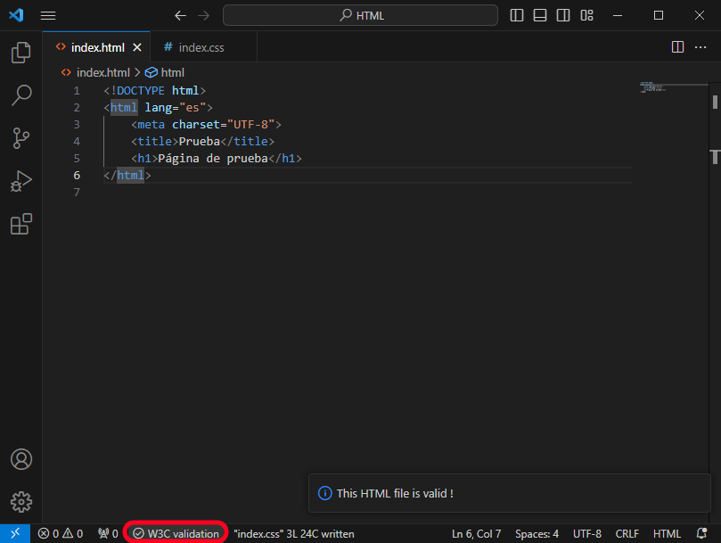En la parte inferior (la remarcada en rojo) aparecerá una leyenda cada vez que tengamos activo un archivo HTML o CSS que nos permite validar el documento. En caso de errores, podremos consultarlos en la venta de errores (Ctrl+Shift+M).
- Visualización
Otra funcionalidad interesante es la de poder previsualizar la página. Para ello tenemos varias alternativas:
- Live Preview (recomendada)
Extensión que mostrará el icono señalado en la captura:
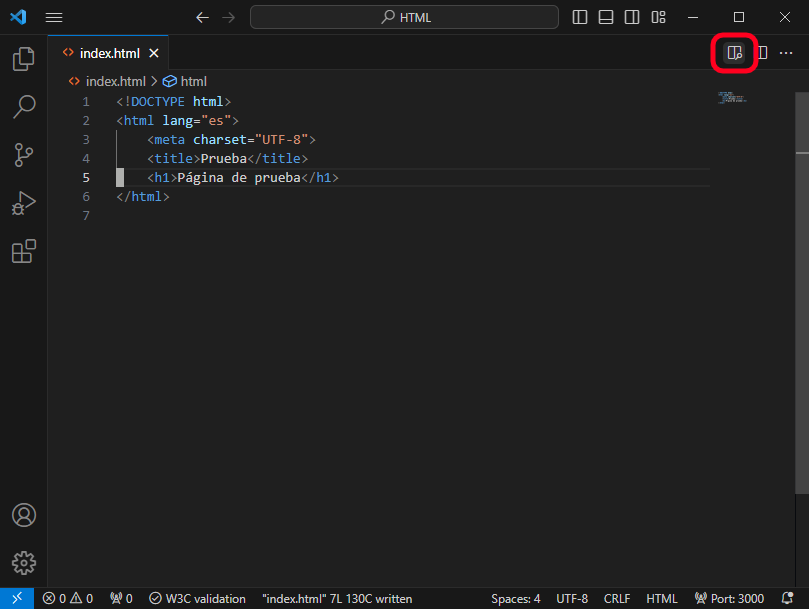La consecuencia de pinchar sobre el icono es ésta:
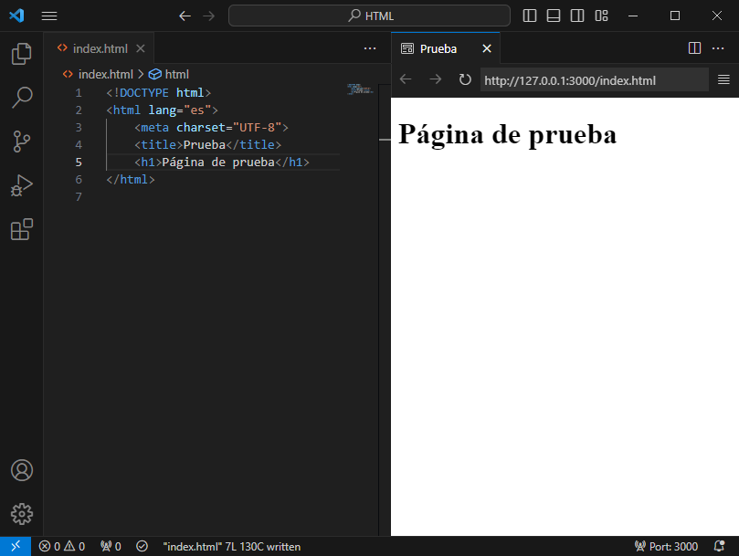es decir, se crea un pequeño servidor web y mediante él se sirve la página en un navegador empotrado. Además, podremos seguir escribiendo y las modificaciones se realizarán en vivo.
Nota
Si deseamos ver la página en un navegador externo, podemos copiar en él la URL que vemos en el empotrado. Los cambios también se reflejarán en vivo.
- Live Server
Extensión parecida a la anterior, pero que muestra la página directamente en el navegador predeterminado del sistema.
Tras la instalación, si estamos en el directorio donde almacenamos nuestro sitio web, tenemos dos alternativas para consultar el aspecto de la página web:
Pinchar sobre
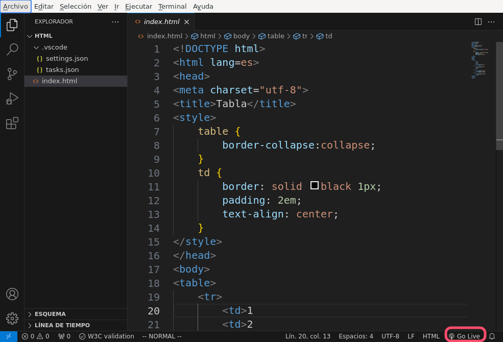Go Live(abajo a la derecha) que intentará abrir directamente sobre el archivoindex.htmldel directorio:Pinchar con el botón derecho sobre el archivo que queremos abrir y seleccionar la entrada adecuada del menú contextual:
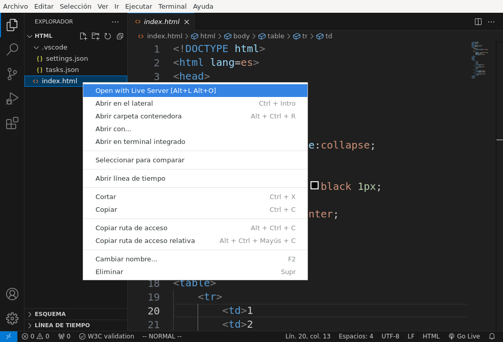
En ambos casos, se levantará un pequeño servidor web y se mostrará el documento HTML en el navegador predeterminado del sistema. Además, según lo vayamos modificando, se reflejarán los cambios en la visualización sin que tengamos que repetir la operación.
Si queremos parar el servidor, basta con pinchar donde antes se mostraba la leyenda
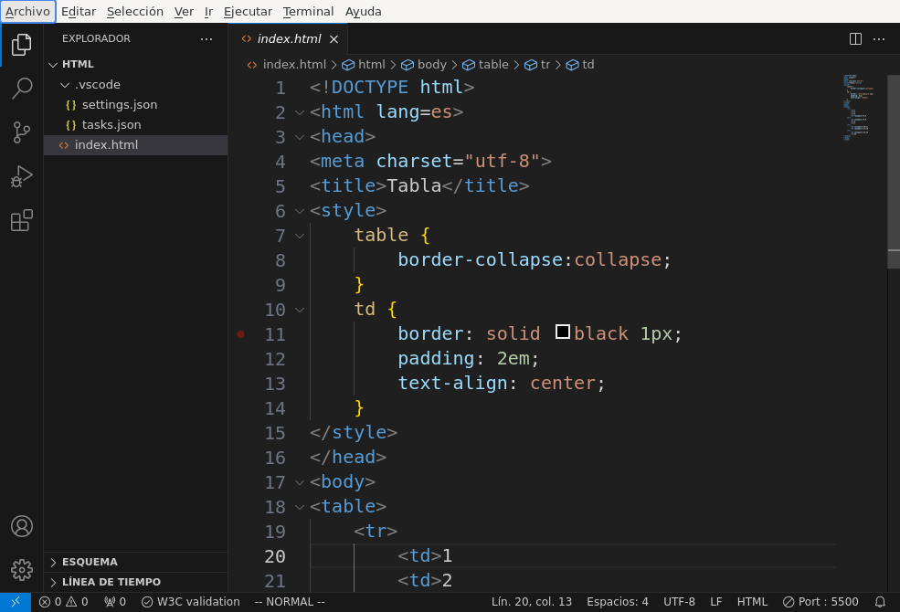Go Livey ahora se muestra el puerto en el que escucha el servicio:Nota
En nuestra humilde opinión, es más cómoda la extensión anterior y, si hay necesidad de utilizar un navegador externo, tampoco supone excesivo trabajo copiar la URL.
- Configuración manual
Consiste en no utilizar ninguna extensión adicional y, simplemente, mapear alguna combinación de teclas para que abra el HTML en el navegador de nuestra elección. No es una solución equivalente a las dos anteriores, puesto que en este caso no se crea ningún servidor web local, sino que el documento HTML se abre como archivo local. Para los propósitos de este curso en que nos limitamos a aprender a escribir páginas estáticas, es probable que no nos percatemos de la diferencia. Para poner en práctica esta alternativa debemos repetir exactamente el ejemplo con el que ilustramos cómo crear tareas.
Javascript¶
Al igual que ocurre con JSON, el programa tiene soporte nativo para la escritura de Javascript (autocompletado, snippets), pese a lo cual podemos hacer algunos añadidos para mejorarla:
Añade snippets adicionales. |
|
Mejora la capacidad nativa para la refactorización. |
|
Permite integrar el analizador estático de código ESLint. |
- Ejecución
Javascript es un lenguaje de programación que requiere de un intérprete. Cuando el código forma parte de un documento HTML (que és el propósito de este módulo) el intérprete encargado es el incluido en el navegador y, por tanto, nos bastará con abrir en un navegador la página para comprobar su ejecución.
Sin embargo, en otros casos en los que Javascript no se ejecuta en un navegador (por tanto, ajenos a nuestro módulo) o si, simplemente, estamos dando los primeros pasos en su aprendizaje y nos resulta más fácil prescindir del documento HTML, necesitamos un intérprete independiente. El más conocido es NodeJS, cuya instalación tanto en Linux como en Windows es trivial.
Como para dar los primeros pasos es conveniente aislarse de las dificultades añadidas de ejecutar código Javascript sobre un documento HTML, nos conviene conocer cómo probar código directamente en el editor. Para ello:
Instalamos NodeJS en nuestro sistema, bien a través del paquete facilitado por su página web (Windows), bien a través de un paquete de distribución (como en el caso de las principales distribuciones de Linux).
Usar la extensión Code Runner, que posibilita ejecutar el archivo activo pulsando Ctrl+Alt+n y ver la salida a través la propia ventana de salida de Visual Studio Code. La ejecución no permite la depuración (puntos de ruptura, ejecución paso a paso, etc.), pero para ello ya existe F5.
Análisis estático
Java¶
Prudencia
El desarrollo con Java nada tiene que ver con los propósitos del módulo de Lenguaje de marcas, pero incluiremos aquí algunas sugerencias aprovechando este pequeño mini manual.
Obviamente, para programar en Java, sea con Visual Studio Code o con cualquier otro IDE, debemos tener instalado JDK (o sea, el paquete de desarrollo para Java). Lo más juicioso en este caso es usar la versión desarrollada por OpenJDK, que publica para distintas plataformas y sistemas operativos. En los sistemas Linux sus versiones son las versiones de referencia[6], así que podremos instalarla mediante el sistema de paquetería; mientras que en Windows podemos utilizar los instalables que nos ofrece Adoptium.
Facilita la gestión de proyectos de Java, permitiendo directamente la creación de un proyecto, que es un área de trabajo con una estructura básica ya definida y una configuración básica. |
|
Permite depurar los programas de Java (puntos de ruptura, ejecución condicional, ejecución paso a paso, etc. |
|
Permite ejecutar casos de prueba. |
|
Proporciona sugerencias basadas en IA |
Prudencia
Code Runner es absolutamente prescindible, ya que al tener instalada Debugger for Java podemos ejecutar los desarrollos pulsando Ctrl+F5. Además, Code Runner no atenderá a la jerarquía de directorios creados por Project Manager for Java.
Además de estas extensiones puede interesarnos añadir configuración adicional:
{
"files.exclude": {
"bin/": true, // No vemos el directorio de compilaciones (Project Manager)
// "**/*.class": true // Interesante si usáramos Code Runner
},
// Evita los inlay hints para los parámetros de las funciones.
"editor.inlayHints.enabled": "off"
}
Además, durante la codificación puede interesarnos hacer alguna prueba individual de cómo funciona método a través de la consola interactiva JShell. Podemos, por supuesto, abrir una terminal (Ctrl+`) y escribir directamente la orden en ella, pero sin duda es más cómodo crear una tarea y asociarla a una combinación de teclas. La tarea podemos definirla con este código JSON:
{
"label": "Shell para Java",
"type": "shell",
"command": "jshell",
"windows": {
// Adoption al instalar Java no define la variable JAVA_HOME,
// sino quue añade la localización del programa al PATH. De lo
// contrario habría que hacer algo así:
// "command": "${env:JAVA_HOME}\\bin\\jshell.exe"
},
"args": [], // Sin argumentos.
"presentation": {
"reveal": "always",
"panel": "new"
},
"problemMatcher": []
}
y la asociación a la combinación Ctrl+Shift+J de este modo:
{
"key": "ctrl+shift+j",
"command": "workbench.action.tasks.runTask",
"args": "Shell para Java"
}
- Creación del proyecto
Para comenzar un proyecto, en vez de abrir directamente un área de trabajo, lo mejor es crear un nuevo proyecto a través de la extensión Project Manager for Java, lo que definirá directamente en la nueva área de trabajo esta estructura:
+- .vscode | +-- settings.json | +- bin +- lib +- src | +-- App.java | + README.md
En
settings.jsonse creará la configuración necesaria para que la ejecución y depuración a través del depurador espere que nuestro código se encuentre bajosrc/y el bytecode se genere bajobin/. Este último directorio, sin embargo, ni siquiera lo veremos si añadimos al perfil la configuración sugerida anteriormente. Por supuesto podemos cambiar el nombre App si no nos convence.Si, además, queremos utilizar F5 y Ctrl+F5 sin necesidad de que el archivo activo sea
App.javapodemos crear unlaunch.json[7]:{ "version": "2.0.0", "configurations": [ { "type": "java", "name": "App", "request": "launch", "mainClass": "App" }, { "type": "java", "name": "App (assert)", "request": "launch", "mainClass": "App", "vmArgs": "-ea" } ] }
En este caso, hemos definido dos mecanismos de ejecución. La diferencia entre ambos es que el segundo comprobará las aserciones.
- Proyecto con Maven
Una alternativa a lo anterior es usar Maven, que tiene la ventaja de simplificar el uso de librerías de terceros. Para ello, necesitaremos haber instalado la extensión Maven for Java.
Al escoger la creación de un proyecto con Maven se nos pedirá escoger un groupID y un artifactID (véanse las explicaciones al respecto en la página del propio software). El proyecto tendrá esta estructura:
+- src | +-- main | | +-- java | | +-- edu | | +-- accesodatos +-- myapp | | +-- Main.java | | +-- ... archivos del proyecto | +-- test (pruebas de software) | +- target (aquí dentro se guardan los .class) +- pom.xml (configuración de Maven)
Se nos generará un archivo
pom.xmlque podemos revisar para definir la versión y el nombre del programa adecuados:<version>1.0</version> <name>MiPrimeraAplicacion</name>
La gestión del proyecto no es muy distinta de la ya descrita, aunque deberemos cambiar el valor de la mainClass del
launch.json:{ "version": "0.2.0", "configurations": [ { "type": "java", "name": "Main", "request": "launch", "mainClass": "edu.accesodatos.myapp.Main" }, { "type": "java", "name": "Main (assert)", "request": "launch", "mainClass": "edu.accesodatos.myapp.Main", "vmArgs": "-ea" } ] }
Nota
Y, posiblemente, también nos interese modificar el valor de files.exclude en settings.json para incluir
target/Ver también
Para más información, consulte las explicaciones de Maven al respecto.
Además, es probable que queramos en algún momento generar documentación del proyecto con Javadoc para ello debemos añadir al archivo
pom.xmlel siguiente bloque:<build> <plugins> <plugin> <groupId>org.apache.maven.plugins</groupId> <artifactId>maven-javadoc-plugin</artifactId> <!-- La última versión puede consultarse en el repositorio de Maven --> <version>3.10.0</version> <configuration> <source>23</source> <!-- Versión de Java. En mi caso, OpenJDK 23 --> <show>private</show> <!-- Muestra los atributos privados --> </configuration> </plugin> </plugins> </build>
Hecho lo cual, podremos generar la documentación con la orden[8]:
$ mvn javadoc:javadoc
Se almacenará dentro de
target/reports/apidocs. Ahora bien, en ocasiones, al regenerar la documentación, puede ocurrir que no se refleje un cambio por culpa de los archivos ya generados. En estos casos, lo mejor es eliminarlos antes de volver a generar la documentación. Para ello lo más cómo es añadir algo más al archivopom.xml:<profiles> <profile> <id>clean-javadoc-only</id> <build> <plugins> <plugin> <artifactId>maven-clean-plugin</artifactId> <configuration> <excludeDefaultDirectories>true</excludeDefaultDirectories> <filesets> <fileset> <directory>${project.build.directory}/reports/apidocs</directory> </fileset> </filesets> </configuration> </plugin> </plugins> </build> </profile> </profiles>
que crea un perfil (clean-javadoc-only) que ejecuta el plugin de limpiado de Maven, no limpiando todos los archivos, sino sólo los relativos a Javadoc. Con ello podremos generar la documentación así:
$ mvn clean:clean javadoc:javadoc -Pclean-javadoc-only
Truco
Si creamos una tarea y le asociamos una combinación de teclas, tal como hicimos con jshell. todo será muy cómodo.
- Exportar JAR
Una acción muy recorrente, una vez que tengamos acabado un proyecto, es crear un JAR a fin de distribuir el ejecutable de la aplicación (esto es, sólo los archivos .class y no el código fuente). Con Visual Studio Code existe el atajo de pinchar el icono remarcado:
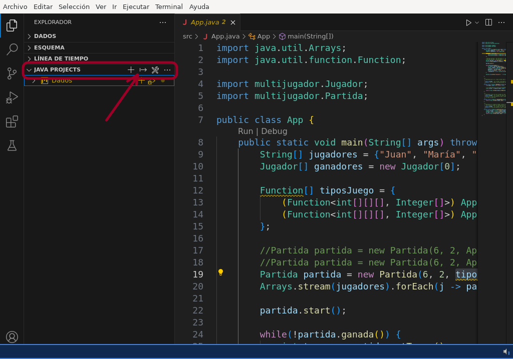o, simplemente, escribir la orden (Ctrl+Shift+P) «Export Jar». En ambos casos, se pedirá el archivo que contiene la clase principal. El .jar quedará guardado en el directorio de proyecto y ya podremos ejecutar la aplicación con:
$ java -jar nombreProyecto.jar
Notas al pie